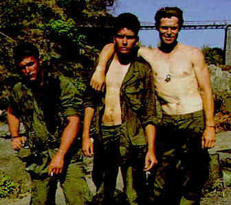
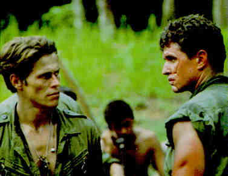

DVD Review Archive
Feature Archive Back Issues Links DVD MIA DVD
Alerts Movie Posters Laser Site Info Home E-mail
© 2002 Films on Disc Stuart J. Kobak ALL RIGHTS RESERVED.
|
|
Laser Disc ReviewPlatoon Special Edition /A, AUS/1986/Color/Widescreen 1.85:1/Stereo Surround/120 minutes/Directed by Oliver Stone/Starring Charlie Sheen, Tom Berenger, Willem Dafoe/Live Home Video/47 Chaps/Audio Commentary, Supplementals/2 discs/CLV-CAV/THX/$129.98 Platoon is an amazing war movie that combines the realities of war with allegorical allusions to good and evil. Chris Taylor is new recruit, arriving in Vietnam fresh from the States and full of ideals, who joins a veteran platoon on their way into the jungles on a recon mission. From those first moments as the helicopter lands amidst typical clouds of dust, Platoon rings with the truth of the Vietnam war. You can feel the coating of dirt clinging to the sides of your mouth and filling the corners of your eyes. Director Oliver Stone chooses to have Taylor narrate the events that follow and this wise choice assures that the film reaches a personal level that may not otherwise have been possible. The narrative is one of the most effective I can recall, never detracting or distancing one from the action, but adding an  additional layer of fabric to the already richly woven story. Platoon works on many levels. Foremost, it is a film about war, that brilliantly captures the subtleties of the day to day existence in the Vietnam jungle. While it is also Chris Taylor's story, it succeeds also as the story of this group of men living under the greatest of pressures. Stone's screenplay is a consummately intuitive work that has developed from his deepest being. The man has lived this experience and the resultant details that bring Platoon to life are amazing in their insight.The ensemble cast works wonders under the prodding and challenging direction of Oliver Stone. Charlie Sheen brings the perfect helping of innocence to Chris Taylor, yet he changes subtly during the unfolding of the film and by the end of Platoon, there is an aspect to Taylor that did not exist as depicted in those first days in Vietnam. Tom Berenger  is magnificent as the malevolent Sergeant Barnes. The man retains a special sense of dignity while living on the borders of the dark side of humanity. This man is the survivor of the jungle war, who sees the war in the starkest terms of reality. It is not difficult to understand this man's step over the limit into the darkness of his soul. His opposite is Sergeant Elias, played with grace and charm by Willem Dafoe. Elias too is a survivor of a different sort who cannot sacrifice his humanity at the alter of survival. The balance of the supporting cast is uniformly remarkable. Stone's driving directorial force extracts career performances from almost everyone in the film.Robert Richardson creates a striking palette for Stone as Director of Photography. His lighting techniques border on the astonishing and he achieves these remarkable visual results with less than a full deck of equipment. Stone and Richardson are a great team and it appears that Richardson can do anything Stone asks of him and more. Platoon is a grand achievement on all fronts of the filmmaking process. The special edition laser disc presentation of Platoon does full justice to the remarkable movie. The package has been created in the form of a canvas bound scrap book, embossed with the image of a set of silver dog tags. The expensively bound book contains numerous photographs and the shooting script. The paper is of the highest quality. Laminated to the back inside book is a typical gatefold laser jacket that houses the two discs. Included on the laser disc is an entertaining documentary that was produced especially for this laser disc. It contains interviews in the form of remembrances with members of the cast and integrates footage from taken during the production. Analog track one provides a two hour running commentary on the action by Oliver Stone and military advisor Captain Dale Dye speaks along with the film on the second analog track. There is also the original theatrical trailer, numerous production stills and the revised shooting script. Dye provides many details of the production problems and the training methods that contributed to bonding the platoon of actors together and creative a sense of reality. His comments are actually more technically oriented than Stone's. Stone appears very tight in viewing and commenting on his film at first. There are moments when it appears that images from the film conjure deeper, more painful images for the director. He is constantly comparing his own experiences to those of the characters in the movie. About a half hour into the film, Stone begins to loosen up some and begins to site more technical aspects of the production. He does observe that Richardson actually used flares to light the pivotal battle at the climax of Platoon and the realization adds an additional dimension of illumination to the achievement. There are moments when Stone cannot interrupt the flow of a scene in progress with his comments and there is a sense of pain and remembrance often is his voice. One of the most interesting comments from Stone used the exact phrase that Taylor did in his narration, describing the platoon's feeling of isolation in the jungle, "like hosts in a landscape. I wondered if this was subconscious or intentional. This is a spectacular laser disc production. Any collector will treasure the care and thought that went into producing it. It is an absolute for any collection. |